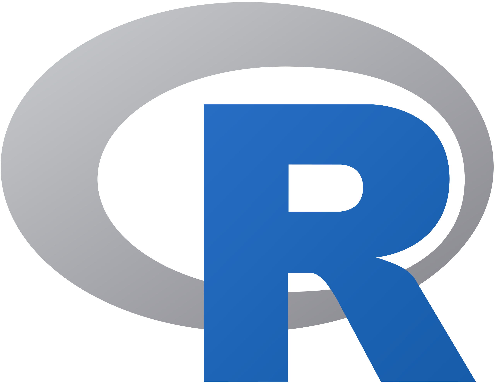
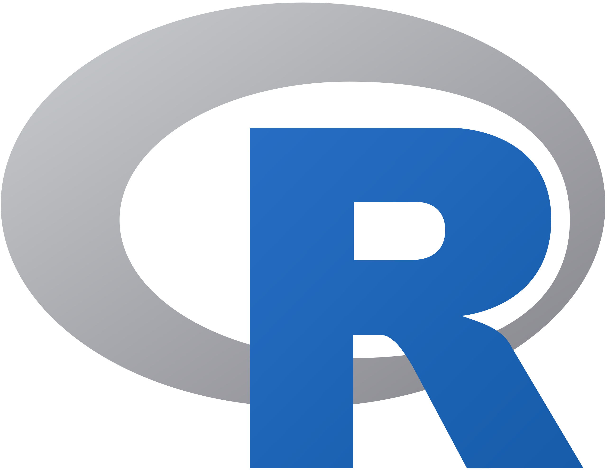

Skills
Below a list of some of the languages, game engines, tools and frameworks I have already used.
Languages


 

Game engines, Tools and Frameworks


Education
I joined the computer science department in 2021. I attended classes on the following subjects :
- compilation, cryptography, artificial intelligence.
- system programmation, POO and network.
- distributed algorithm, multicore and GPU programming.
- agile methodologies such as SCRUM.
I have compleated a year of study abroad at UQAC as part of a double degree agreement. I was in the Master's program in Computer Science with a concentration in Video Games which allows me to address the following topics :
- Game engine principals, Video Game programming.
- Serious Games.
- Video Games Math and Physics.
- Parallel architectures programming, 3D interactions and Virtual Reality.

Projects
Ogmentis
- Date : october 2024 to april 2025
- Type : Internship
- Team : Ogmentis company
- Tech : Unity 6, ARFoundation
Ogmentis is a b2b company selling Augmented Reality solutions to improve retailer''s sales. I have worked on improving UI, adding new AR modules, optimizing the app's performance and debugging.
G.O.O.H.
- Date : january to april 2024
- Type : Academic project
- Team : 5 developpers, 1 artist
- Tech : UnrealEngine 5.3, C++
Get Out Of Here is a survival horror game. The players embodie survivors in an abandoned space station. They must escape from the different creatures that have taken possession of the place and find a spaceship to leave the station.
SIR Gate
- Date : january to june 2024
- Type : Academic project
- Team : 6 developpers, 1 artist
- Tech : UnrealEngine from source 5.3
SIR Gate is an online fps in 3 versus 3 deathmatch mode. The goal of this project is to experiment some of the issues related to online video games and their solutions (lobby, server rewind ...).
A New Sun
- Date : january to april 2024
- Type : Academic project
- Team : 5 developpers, 1 artist
- Tech : UnrealEngine 5.3, C++
A New Sun is a turn-based management serious game that aims to educate players on sustainable production alternatives. The action takes place in a post-apocalyptic human colony. The player controls the construction of the city on a map divided into tiles and tries to maintain a balance in its resources.
An Ocean of Life
- Date : january to april 2024
- Type : Academic project
- Team : 3 developpers
- Tech : UnrealEngine 5.3, C++
An Ocean of Life is an immersive Virtual Reality game in an underwater environment. The emphasis is on the beauty of the environments offered for exploration. The player can learn about the marine species encountered and the climatic and environmental risks to which they are subjected.
Neverland
- Date : september to december 2023
- Type : Academic project
- Team : 5 developpers, 2 artists
- Tech : Unity 3D, C#
Neverland is a narrative platformer game in a feel-good atmosphere. The goal is to move around in an intriguing and colorful world where one can takes its time and immerse itself in the atmosphere of the places. The adventures offered are therefore centered around themes such as discovery, exploration, and relationships with others.
GalaxyPotatoes
- Date : 6 to 8 october 2023
- Type : GameJam
- Team : 4 developpers, 1 artist
- Tech : Unity 3D, C#
Galaxy Potatoes is a small game made during a GameJam. The goal is to complete quests by placing objects in the environment, then launching a potato with a cannon. The objects can modify the speed or direction of the projectile to help the players achieve their goals.
Pepper Engine
- Date : september to december 2023
- Type : Academic project
- Team : 3 developpers
- Tech : C++, Vulkan
The Pepper Engine is a small library providing basic mathematical and physical elements for a game engine. It was made from scratch in C++. It includes vector and matrix calculations, rigid body physics with rotations, collision detection and resolution.

CreaCubeVR
- Date : december 2022 to april 2023
- Type : Academic project
- Team : 7 developpers
- Tech : Unity3D, C#
CreaCubeVR is a project initiated by researchers from CNRS and INRIA Bordeaux. The application seeks to reproduce an existing experimental device (in physical version) on a computer to facilitate its deployment and data collection. The user must explore the relationships between 4 robotic cubes with several capabilities (motor, wheels, sensor ...) and assemble them appropriately.
Reimyn's Memories
- Date : 8 to 11 april 2022
- Type : GameJam
- Team : 3 developpers, 2 artists
- Tech : Unity 3D, C#
Made during a GameJam, Reimyn's Memories was designed to meet the constraint "Your game must contain two styles of games". Here is a memory puzzle game in RPG format opening on an exposition phase in visual novel format.